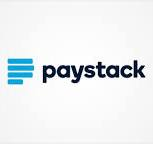
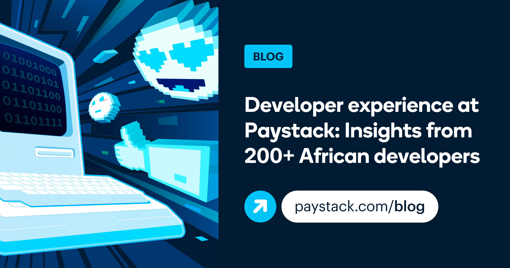

> To: City Life
Hi Rilwan,
Welcome to this month's issue of the Paystack Developer Roundup! I'm very excited for this one, as I get to share some updates on what my team has been working on.
As part of our continuous effort to improve Paystack's developer experience, my team conducted some research on what matters most to Africa-based software developers.
We conducted interviews, sent out surveys, and combined the feedback we received with other research to produce a new article on the Paystack Blog;!
If you're interested in learning what challenges African developers are facing, how best to reach them, or how to evaluate your product's developer experience, there's something in this article for you. Dive into the blog to learn more -->
I'd love to hear your thoughts and continue the conversation, so feel free to email me at tolu@paystack.com if you want to chat!
We'll also be hosting developer meetups in Lagos and Accra this Friday (October 11) where we'll be exploring all things mobile development. Mark your calendars, and we look forward to seeing you there!
Have a great month!

From the Blog

Earlier this year, our Developer Relations team connected with over 200 African developers from Ghana, Kenya, Nigeria, and South Africa to understand their views on developer experience.
We discovered surprising insights into what matters to African developers and found new ways to better meet their needs. Check out this blog post to explore our findings and discover how to effectively engage your developer community.
Around the Web
- Debugging till dawn
- What does a date actually mean?
- Your team needs juniors
- How we improved availability through iterative simplification
Level up your debugging workflow with git bisect.
A proposal for a better way of communicating deadlines.
Hiring junior devs could be a force multiplier for innovating at scale.
A peek into how GitHub solves problems at scale.
Product Updates
- Pay with Pocket: Pay with Pocket is now available on the Paystack Checkout to Nigerian merchants. Learn more about Pay with Pocket and how to enable it on your integration
Community and Open Source
- The Paystack OpenApi Specification file has been updated with custom response models for all available endpoints and adds the Storefront API endpoints and operations

Events
- Join us and our friends at Mainstack on Friday, October 11, at our Lagos HQ for a technical event where African technology enthusiasts will engage in collaborative discussions about expanding African-built software to users around the globe.
 10:00 am - 3:00 pm (WAT)
10:00 am - 3:00 pm (WAT)
- We'll also be hosting developer meetups in Lagos or Accra on October 11! In this edition of the meetups, we'll be discusiing all things mobile development. Come join fellow mobile developers in a relaxed environment to network and learn, as we host simultaneous events in Nigeria and Ghana.
Lagos: 6:00 - 8:00 pm (WAT)
Accra: 6:00 - 8:00 pm (GMT)
We're hiring
Paystack is on the lookout for empathetic and creative problem-solvers to join our team and help build reliable and scalable payments infrastructure. We're currently hiring for multiple roles across our markets, so if you are or know any thinkers and tinkerers interested in building the future of payments in Africa, we'd love to hear from you -->
- Finance and Strategy Specialist (Nigeria)
- Finance Manager (Ghana)
- Payroll Specialist
- Enterprise Risk Lead (Ghana/Nigeria)
- Senior Counsel (Nigeria)
- Senior Sales Executive (South Africa)
- Senior Backend Engineer (South Africa)
Stay Connected
Warm regards,
Tolu and the Developer Relations team
To make sure you keep getting emails, please add devrel@m.paystack.com to your address book or allow list. Want to control the kind of emails you receive from Paystack? Update your email prefrences. Want out of the loop? Unsubscribe.
126 Joel Ogunnaike Street, Ikeja GRA, Ikeja, Lagos,Nigeria